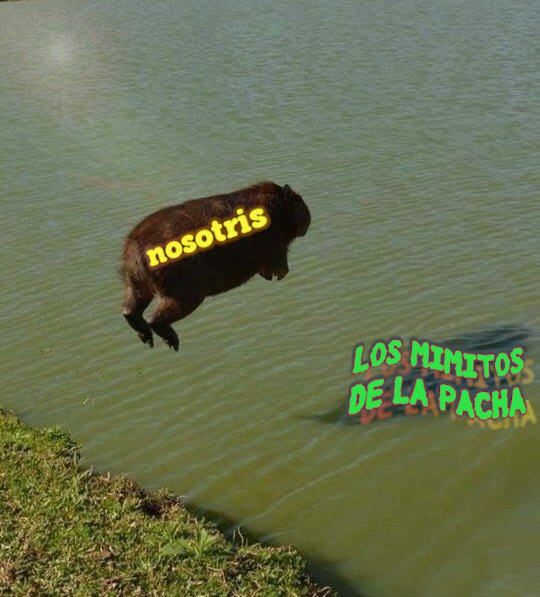

20 un himno para nuestra junción
si las profecías climatológicas que anuncian que para el sábado
estaremos libres ya de esta lluvia espuria
no erran como tienen por costumbre
a lo mejor
digo
podríamos ir al parque

como supimos convenir a celebrar un aquelarre de invocación a la primavera
meta porro vino y lo que sea
atendiendo por otro lado el llamado de la naturaleza cíclica
porque somos fantasmas nunca ángeles y no sabemos
cuándo invocamos y cuándo estamos siendo invocadas
estas son nuestras presencias jóvenes que laten desde atrás y huelen las flores y se visten lindo o
trabajan cuando pueden la forma de su espalda
tengo también para mí el sonido de los pájaros como evocación
de los árboles altos que mueve el viento -y a los enamorados el pensamiento- pero también de una manera de la amistad
que paseando por las calles rosarinas me refería las características de la avifauna local
sonante a nuestros pasos
una de las aves en cuestión lo que hacía por ejemplo era ocupar los nidos de otras especies como gesto territorial expulsivo
otra era yo
tarareando barrio barrio
que tenés el alma inquieta de un gorrión sentimental
pasó ya el tiempo desde entonces pero de igual modo toda esa distancia todavía nos desune nos vuelve a unir y así sucesivamente
a nosotras nos separa otro bordoneo espectral
que galopa por los rieles pero también toda una extensión de pampa que se abisma por selváticos senderos
de bruma color nuestros vapores
con distinta gradación de luces sombras y espesores
para que floten libremente como soles
y viajen el uno hacia el otro sin apenas conocerse
nuestros ímpetus de gozosos corazones
porque llega la primavera y lo saben nuestras cuerpas
en ese tren las vestimos las disponemos
y en ese tono ajustamos lo mismo nuestras lenguas que dicen sí
nos veamos tengo ganas me pinta la idea qué planazo
porque el deseo es más de rodearse de pasto y de furor
florecido pero también
de pieles en roce incluso bocas que se juntan y se chupan
sutilmente en el chat y en el encuentro
presencial quién sabe
quisimos venir al parque y ver
árboles hongos
flashar romance en forma de amistad

y conocer la armonía la dulce policronía de las tardes fabriqueras
desde la ventana empolvada
de un furgón muchacho mientras venimos
y entronamos en nuestras cabezas el decoro recíproco de maquinar
cómo me pongo linda para vos
si te prometí implícitamente cariño y fantasía
un alma brava a vos dispuesta
cómo vamos además a caer
en ese abismo de pasaje
a otras formas de escanciar lenguas y cuerpas
me decís
te quiero mucho por escuchar mis playlists
te digo
hice este meme para manijear nuestra juntada
aunque de tan candombe una me arruine
me corte de mandinga y me acuerdo de lo mío
porque ahora quiero
que veas mi casa una sirena que se enreda en estrellas de cemento sobre una ciudad cruzada
y florece para vos
sin aguantarse a que despeje
regida puramente por la pasión estacionaria a la fuerza de tu cara
performada en una selfi sacada exclusivamente entre nosotras
entonces los árboles los árboles
que arrancan a mosquearse a nuestra gira
pastito bragado de hormiguitas que somos
soñantes de marisma y distancia bien rompida
porque es eso el parque se presta a una
proxemia pagana que sabemos construir
con sudor y sin pudor
para apoyar el mantel con parsimonia fornida en el agujero del arenal
cosa de hacer del espacio una fuga temporal merecida por nuestro agite
y nos arrimemos
a compartir el vino el calorsito estas pulsiones
de sábado hermoso
armado
meramente
a las señas varias del amor súbito en mansedumbre
mientras con los ojos cholos contemplamos la caída
brusca de la civilización occidental pero también
de sus tipologías del afecto
embrutecidas en la gestión mercantil de los deseos
y ruedan en nuestras manos de mediodía la belleza que nos junta
y ese polen que exhalan sin vergüenza las veredas y los bosques
como cantando un poema lírico sobre la importancia
de expropiar espacios verdes
a distancia proletaria
entre metrópolis terribles
donde mechar una lona y hacer el fuego que nuestros coras piden con ramitas y hojas secas
los celulares en silencio sólo las corrientes de aire dirigiendo
la música de la noche esa estrella borracha
que al calor de la luna nos vuelve extrañas de hermosura
pero grandes y posibles
porque mientras la carne se macera en la brasa que nos abriga algo somos
de utopía y de asedio y de incandescencia y nunca unas
manos al humo
solitarias no
abolimos la soledad y también la felicidad
más al fondo entonces las cumbias retumban como un eco de guaracha
un grito de guerra para la necesidad de una danza taimada que ponga en juego
la necesidad física
abreve los placeres
al cauce del viento y de nuevo a los pájaros
que no por chirria son capaces de sonar al compás de las vestiduras humanas
sus rituales nocturnos concedidos al brebaje espirituoso
materia afín que nos arrastra la una tan cerca
tan cerca de la otra
son orejas de la precariedad y el aislamiento nuestros pulsos
pero que vienen desde antes se diría acaso
los tiempos de la colonia y el trabajo
rastro que habita a todo esto en la corteza milenaria de nuestros cueros y ambientes sobre los que quizá
ahora nos recostamos suaves ya cediendo ya sedientas
ya no de alcohol sino de estos jugos
que nos regala el nuevo clima
a las anatomías jóvenes no
sino a las corazonas que cancelamos lo más gris de este futuro
y marcamos nuestro pecho
con sangre arrebatada a los flujos
incesantes del valor para preparar así con todas
las armas de la querencia
nuestro gesto barroco
de inventarnos una vida en medio de la muerte